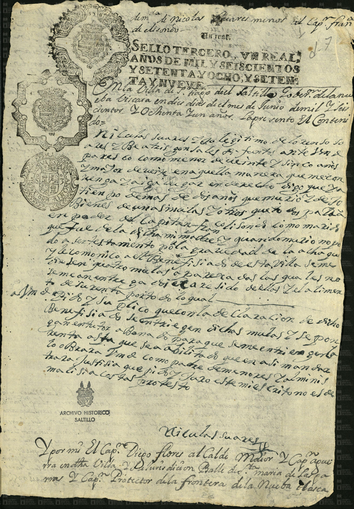
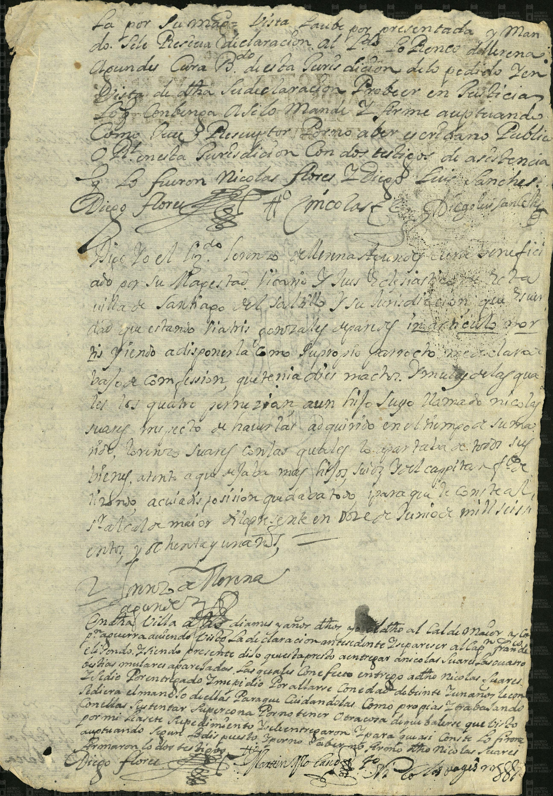

Beatriz González · Nicolás Suárez


| Fondo | Presidencia Municipal (PM) |
| Firma AMS | AMS, PM, c 3, e 38, d 7, 1 f |
| Fecha | 10 de junio de 1681 (según la ficha del catálogo) |
| Descripción de la ficha del catálogo (tal cual) | Nicolás Suárez pide se le entreguen los bienes que dejó su madre Beatríz González y que están en poder de su padrastro el capitán Francisco de Elizondo. |
| Id de ficha en el portal | 50162 |
| Personas indexadas en la ficha | Nicolás Suárez, Beatriz González, Francisco de Elizondo |
Transcripción pendiente. La imagen se publica con la descripción de la ficha del catálogo; no se ha leído línea por línea.
Imagen y ficha: Archivo Municipal de Saltillo, Sefarad MX. Fuente: Archivo Municipal de Saltillo, portal del archivo digital (Presidencia Municipal). Verificado y avalado por Sefarad MX · genealogiasefardi.site.